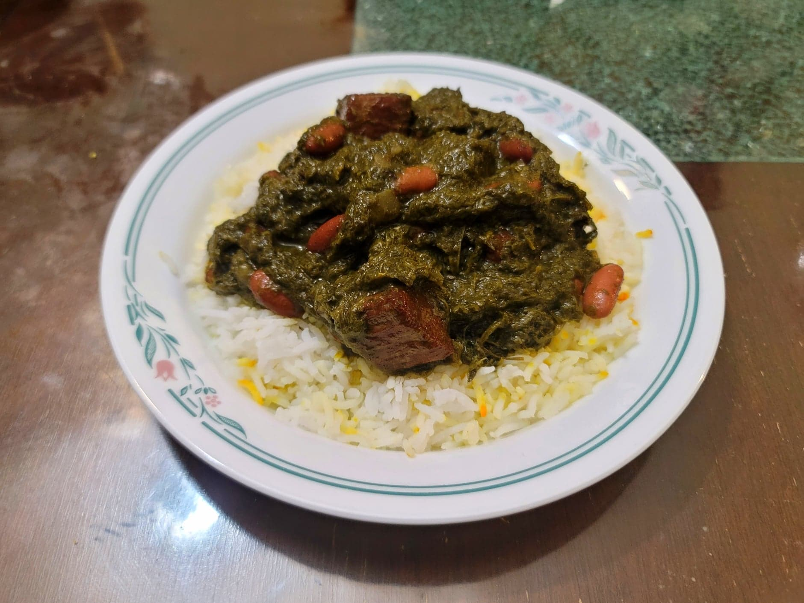

Ghormeh Sabzi

Ingredients:
- 1 1/2 lb Stewing Beef or Lamb, 2 inch cubes
- Salt, to taste
- 3 tbsp Canola oil
- 2 Onions, diced
- 1 15 oz can Red kidney beans, rinsed
- 1 tsp Turmeric
- 1/2 tsp Black pepper
- 4 whole Limoo amani
- 5 cups Water, or as needed
- 3 cups Scallion greens, about 3 bunches
- 3 cups Parsley, about 3 bunches
- 2 cups Cilantro, about 2 bunches
- 3 tbsp Canola oil
- 1-2 tbsp Dried fenugreek
- Crushed limoo amani, to taste
Instructions:
- Season the meat with salt to taste. Add the oil to a large pot and place over medium-high heat. Sear the meat on all sides, about 2 minutes per side or roughly 10 minutes per batch. Then remove the meat from the pot and reserve.
- Add in the onions and sauté until golden brown, about 7-10 minutes. Then add back in the meat along with the turmeric, pepper, and limoo amani. Sauté for just about 1 minute or until fragrant. Then add in the water. Bring to a boil and then reduce the heat to medium-low. Partially cover and let cook for 1 hour, stirring occasionally.
- Meanwhile, for the scallions, cilantro, and parsley, finely slice all of them by hand or place them all into a food processor and pulse until very fine.
- Heat the oil in a large pan over medium heat. Add the herbs and sauté for 8-10 minutes, or until bright green and starting to wilt. Then season with salt to taste and add in the fenugreek. Sauté another 8-10 minutes, or until the herbs are darkened and mostly dried out.
- Once the stew has cooked for 1 hour, stir in the herbs. Season lightly with more salt to taste. Let cook for another 2-2 1/2 hours, partially covered, stirring ocassionally. Add more water as needed if it becomes too thick.
- For the last 10 minutes of cooking, stir in the beans.
- Taste and add salt and crushed limoo amani as needed. Serve hot over Persian steamed rice.